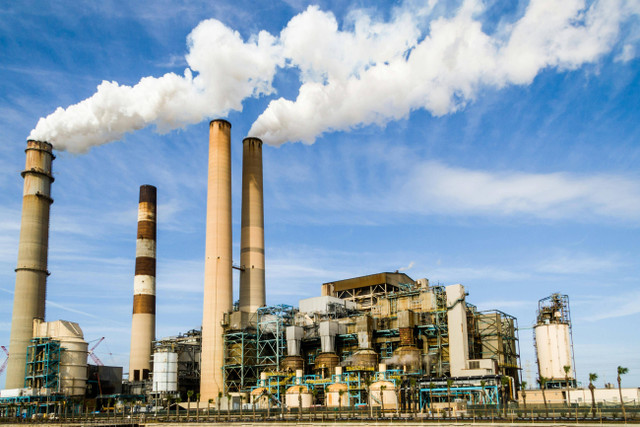

Revolusi industri 1.0

revolusi industri pertama terjadi perubahan secara besar-besaran di bidang pertanian, manufaktur, pertambangan, transportasi dan teknologi. Jika pada masa itu masih banyak pekerjaan yang menggunakan tenaga manusia dan hewan.setelah adanya revolusi industri 1.0 semuanya berubah ketika ditemukannya sebuah alat penenun benang mekanik pada tahun 1784 oleh James Watt. Hal ini menyebabkan tenaga manusia maupun tenaga hewan tidak lagi dibutuhkan yang mengakibatkan banyaknya pengangguran meski jumlah produksi meningkat.